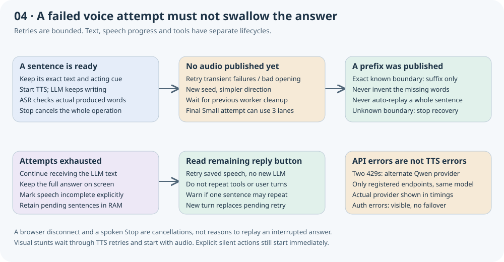

Speech that survives failures. Stunts that overlap speech.
Verified on November 14, 2026. Robby now starts spoken spins and somersaults from the actual playback clock. Bounded speech recovery retains the complete answer and resumes only a verified unspoken suffix when possible.
100 targeted unit tests passed · 4 real TTS cases passed · 3 real HTTPS browser turns passed · prior truncation reproduced and recovered
What changed
The old four-second action deadline could finish an animation before delayed audio arrived. Spoken actions now wait for the matching reply's first played samples. Explicitly silent actions still run immediately. A final no-audio result can perform the requested motion silently.
A verified prefix was sometimes marked as a complete answer. The checker now identifies an exact remaining written-word suffix; only that suffix can be regenerated automatically. An uncertain continuation position does not authorize replay. After up to three attempts, the full answer remains visible with a Read remaining reply control. This uses the saved sentences without repeating tools or calling the language model again.
HTTP 429 during planning is displayed separately from speech failure. Repeated throttling can route the same Qwen model to another registered endpoint; strict endpoint pinning remains configurable. The reviewed incidents did not show a GPU OOM.
Actual browser playback and rendered motion
Small RL, single-stream generation, parallel word verification, quick reactions off. These three measured turns include the API language model; timings end at first server PCM and exclude browser playback lead. Overlap uses actual browser playback position and rendered body rotation.
The spin and somersault both exceeded 330° of body rotation. The short spin sentence does not fill the entire six-second animation. The four-sentence reply recovered from one rejected opening. All four diagrams loaded; mobile layout had no horizontal overflow and the final browser run had no JavaScript errors.
Real TTS recovery probes
Local TTS request → first verified PCM, excluding user ASR and LLM. One connection failure was injected in the test client before admission; subsequent synthesis and ASR were real. No mock production audio or public fault-injection endpoint was used.
The final German case naturally failed its first opening check and succeeded on retry.
The previously missing sentence ending
Seed 778 reproduced the old incomplete prefix using real TTS and ASR. The checker retained “Hello, it is lovely to see you.” and requested only “We can discover something new together today.” The second attempt completed it. First PCM: 1,031 ms; combined audio: 5.30 s.
Final recognition: Hello. It is lovely to see you and we can discover something new together today.
The extra “and” is a remaining transcription or generation discrepancy. This demonstrates recovery, not perfect word accuracy. The 6,992 ms test wall time includes a separate final ASR check.
Reproduce and interpret the results
See SPEECH_RECOVERY.md for commands and policy details. Run check_speech_recovery_live.py, check_verified_suffix_live.py and browser_speech_recovery_check.py against an idle, warmed deployment, then render_speech_recovery_report.py.
The initial browser test exposed an undefined pending-action dereference; it was fixed before the passing run. Its failed receipt remains locally. Forced text retention, manual speech retry, cancellation and a twelve-second delayed playback were checked with isolated contracts. Those are distinguished from the real model turns above.
- Small authored regression suite, not a measured deployment failure rate.
- Manual retry and terminal-failure text retention tested in isolated contracts.
- No physical microphone, noisy-room or acoustic playback validation in this run.
- ASR verification is fallible; suffix evaluation uses the same ASR family.
- The suffix test includes an extra recognized "and", not perfect WER.
- Rate limits, cold starts, GPU contention and retries can still add seconds.
- The separate five-second microphone backlog failure is not claimed fixed here.
Recovery diagram

Only authored regression requests and reviewed measurements are published. No visitor recordings, identity embeddings or credentials are included.